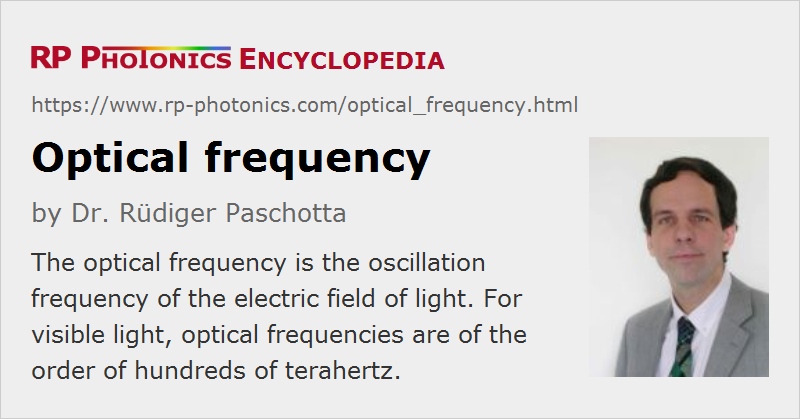

Optical Frequency
Definition: the oscillation frequency of the electric field of light
German: optische Frequenz
Categories: general optics, optical resonators, optical metrology, physical foundations
Formula symbol: ν
How to cite the article; suggest additional literature
Author: Dr. Rüdiger Paschotta
The optical frequency (for example of a quasi-monochromatic laser beam) is the oscillation frequency of the corresponding electromagnetic wave. For visible light, optical frequencies are roughly between 400 THz (terahertz = 1012 Hz = 1 trillion hertz) and 700 THz, corresponding to vacuum wavelengths between 700 nm and 400 nm. Infrared light has correspondingly lower optical frequencies, while ultraviolet light has higher frequencies.
Many equations in optics involve angular optical frequencies, which are 2 π times the optical frequency: ω = 2π ν.
Usually, light does not have one particular optical frequency; its optical power is distributed over some frequency range, which sometimes spends a whole octave (i.e., a factor of two in terms of frequency) or even substantially more. The optical spectrum tells one how the power is distributed over the frequencies, i.e., it specifies the power spectral density as a function of frequency or vacuum wavelength.
There are technical light sources (highly stabilized lasers) which can produce light with a very small optical bandwidth – sometimes even well below 1 Hz, which is an extremely small fraction of the mean optical frequency of hundreds of terahertz. Such light sources are called optical frequency standards and are required for optical clocks, for example.
The optical frequency can be calculated as the vacuum velocity of light divided by the vacuum wavelength: ν = c / λ. However, optical frequencies can be measured far more precisely than wavelengths; see the article on optical frequency metrology. Optical frequencies cannot be directly detected like microwave frequencies; there is simply no counter which can register so fast oscillations. Nevertheless, with indirect methods, nowadays usually involving stabilized frequency combs, it has become possible to exactly relate optical frequencies (from some optical frequency standards, for example) to microwave frequencies (e.g., from cesium clocks), or to other optical frequencies. As optical frequency standards can be more precise than microwave frequency standards and also allow for much more rapid frequency comparisons, it is expected that the definition of the second is the fundamental unit for the time in the international system of units (SI system) will soon be redefined based on an optical frequency standard.
If two optical frequencies are relatively close, there difference can be measured relatively easily: a beat note is obtained by superimposing the two beams on a fast photodetector, and the photodetector's output signal can be processed with an electronic frequency counter, for example.
The optical frequency of light is in a sense more fundamental then the optical wavelength. For example, an atom or ion exposed to light cannot “see” the wavelength since its size is only a very small fraction of it. It essentially just registers a fast oscillation, i.e., the optical frequency. If that frequency coincides with certain internal resins frequencies, resonant excitation processes can occur. The internal resonant frequencies are not related to some distance equal to the optical wavelength. Nevertheless, for historical reasons it is more common to specify wavelengths rather than optical frequencies of light. (For example, Nd:YAG lasers operating on their standard laser transition are commonly said to emit light with 1064 nm vacuum wavelength, rather than with a frequency of 282 THz.) This is essentially because optical wavelengths could soon be determined by using various kinds of interferometers, whereas it was difficult in the early times to measure or even to estimate optical frequencies.
Questions and Comments from Users
Here you can submit questions and comments. As far as they get accepted by the author, they will appear above this paragraph together with the author’s answer. The author will decide on acceptance based on certain criteria. Essentially, the issue must be of sufficiently broad interest.
Please do not enter personal data here; we would otherwise delete it soon. (See also our privacy declaration.) If you wish to receive personal feedback or consultancy from the author, please contact him e.g. via e-mail.
By submitting the information, you give your consent to the potential publication of your inputs on our website according to our rules. (If you later retract your consent, we will delete those inputs.) As your inputs are first reviewed by the author, they may be published with some delay.
See also: optical spectrum, optical frequency standards, optical clocks, frequency metrology, frequency combs, monochromatic light, frequency noise, acousto-optic frequency shifters, wavelength
and other articles in the categories general optics, optical resonators, optical metrology, physical foundations
|  |
If you like this page, please share the link with your friends and colleagues, e.g. via social media:
These sharing buttons are implemented in a privacy-friendly way!